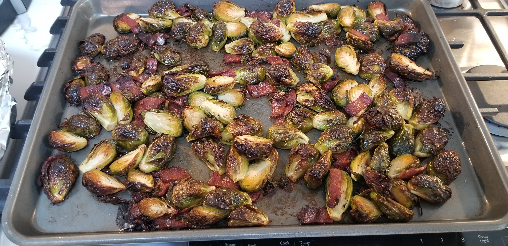

Maple Roasted Brussels Sprouts with Bacon

Description
Who knew Brussels sprouts could ever taste this good! Caramelized and crispy, these sprouts gain a nutty flavor from the roasting process.
Ingredients
- 1 pound Brussels sprouts, trimmed
- ¼ cup extra-virgin olive oil
- 3 tablespoons pure maple syrup
- 4 slices bacon, cut into 1/2-inch pieces
- ½ teaspoon salt
- ¼ teaspoon freshly ground black pepper
Steps
- Preheat oven to 400 degrees F (200 degrees C).
- Place Brussels sprouts in a single layer in a baking dish.
- Drizzle with olive oil and maple syrup; toss to coat.
- Sprinkle with bacon; season with salt and black pepper.
- Roast in the preheated oven until bacon is crispy and Brussels sprouts are caramelized, 45 minutes, stirring halfway through.